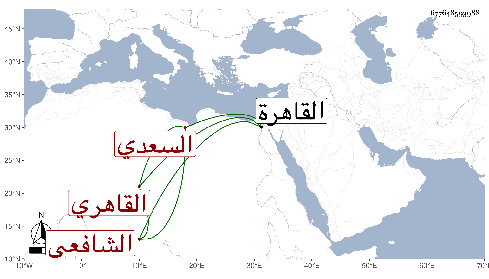

0902Sakhawi.DawLamic.ITO20230111-ara1.EIS1600.677648593988
Biography ID: 677648593988
152
محمد بن عبد الله بن إبراهيم بن عبد الرحمن بن علي بن سنان بن رميح محي الدين أبو نافع بن الجمال بن البرهان السعدي القاهري الشافعي ويعرف بالأزهري وبابن الريفي . ولد في أحد الربيعين سنة تسع وثمانين وسبعمائة بالقاهرة ونشأ بها فحفظ القرآن والعمدة والتنبيه وألفية النحو ، وعرض في سنة ثمانمائة فما بعدها على جماعة كالأبناسي وابن الملقن والبلقيني والعراقي وأولاد كل من الثلاثة النور والجلال والولي وناصر الدين الصالحي والدميري وأجازوه والصدر المناوي وغيره ممن لم نر في خطه الإجازة ، واشتغل بالعلم يسيرا وتكسب بالشهادة وكتب التوقيع وتنزل في الجهات وباشر المؤيدية والباسطية وكان خطيبها ، وحج مرارا منها في سنة ستين وجاور التي تليها وقيد فوائد ومسائل بخطه وكتب عن البدر الدماميني شيئا من شعره بل اعتني بالسماع فسمع على الفرسيسي معظم سيرة ابن سيد الناس وهو أول سماع وقفت له عليه كان في سنة ست وتسعين وعلى الشرف بن الكويك والجمالين الحنبلي والكازروني والشموس الشامي وابن البيطار والزراتيتي وابن المصري والبوصيري وابن علي البيجوري والبرماوي والولي العراقي والنور الفوى والشهاب البطائحي والسراج قارئ الهداية ، وكان يضبط الأسماء ويكتب الطباق بدون براعة فيهما ، وأجاز له في استدعاء بخط البدر بن الدماميني في شعبان سنة إحدى وثمانمائة أبو الخير بن العلائي ، وحدث سمع منه الفضلاء حملت عنه أشياء ، وكان معدلا فاضلا ضابطا لفوائد ونوادر طلق الكلام خطيبا جهوري الصوت . وقال البقاعي إنه كان غير عدل مجازفا في شهاداته متساهلا . مات في ليلة الخميس سابع جمادى الأولى سنة سبعين بمنزله من السيوفية قريب الأشرفية سامحه الله .
